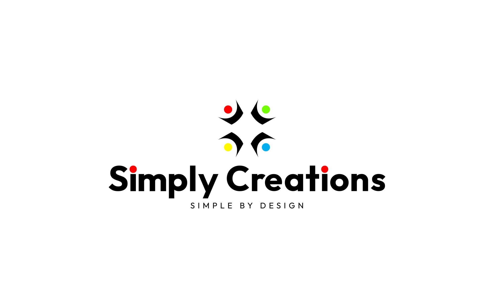
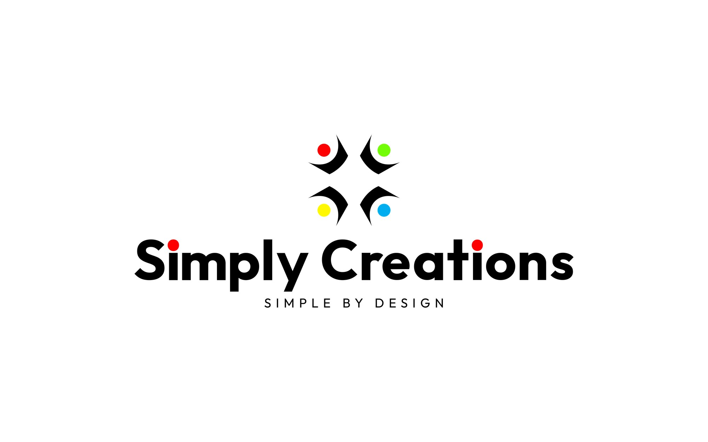
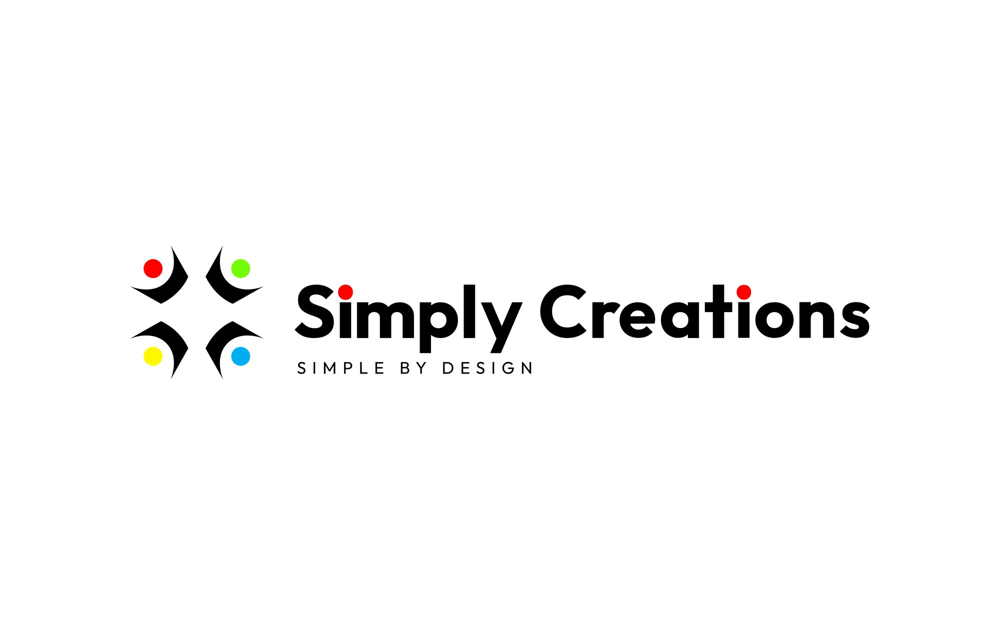
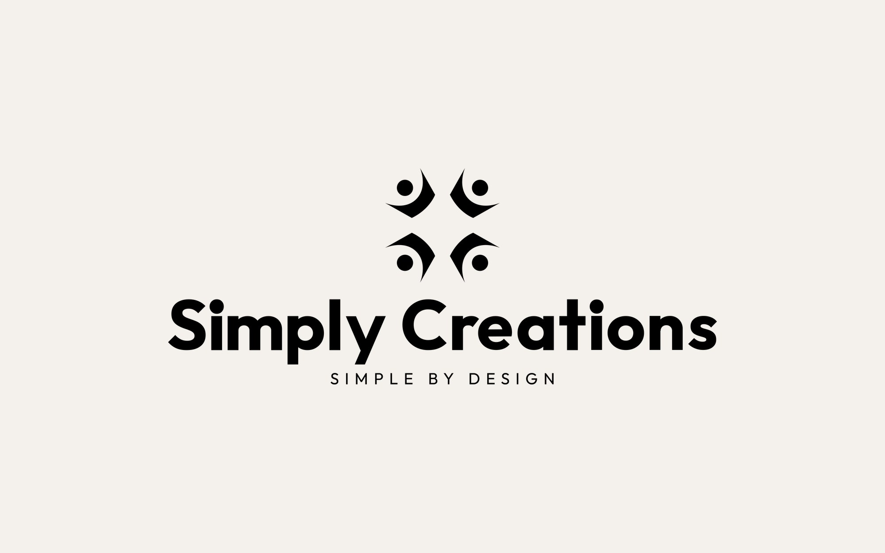
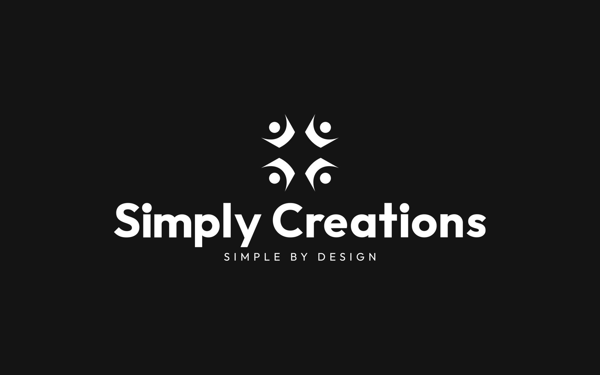
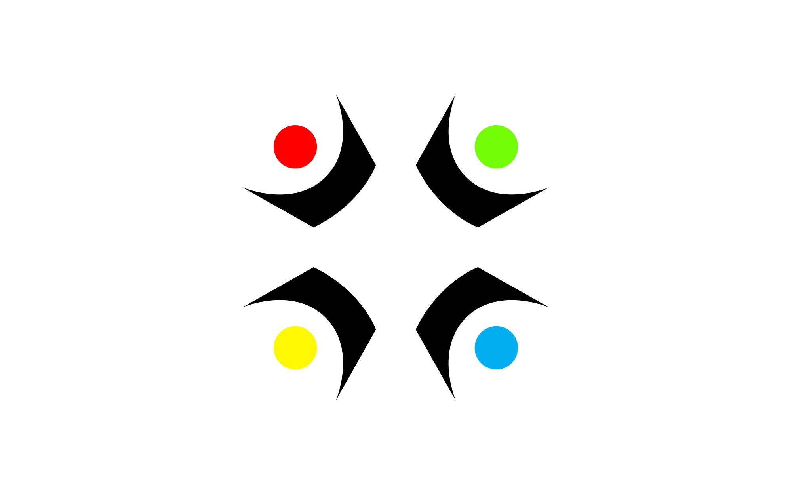
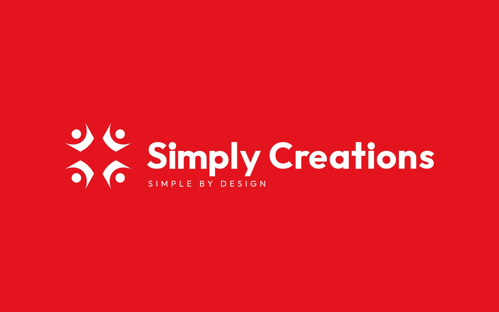

Case file · Logo design
Simply Creations
The logo for the design studio I founded: four people around one table, each bringing a different idea. Simple by design.

- Project
- Logo and identity
- Client
- Simply Creations, my own design studio
- Tools
- Adobe Illustrator
- Year
- 2023, refreshed 2026
01The story
As Main Designer at HCCPAS, the photographic arts society at Henegama Central College, I trained new students in Photoshop, Illustrator and design principles. Three of them and I went on to start Simply Creations, a small studio making simple, powerful and neat designs.
02The idea
Four people gathered around one table, each with a different idea. The table was taken away so the four figures read at first glance. Each of us has a colour: red is me, the one who brought the team together, and green, blue and yellow follow from mixing them.
03From sketch to logo
04Logo versions





